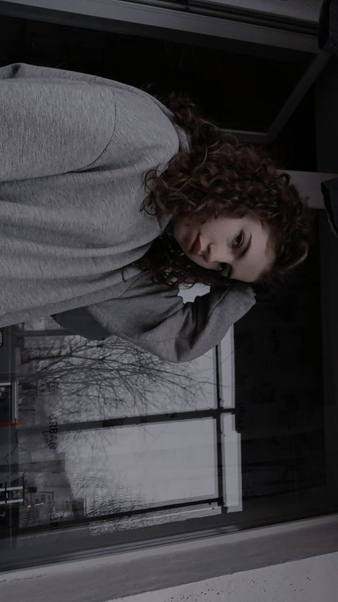
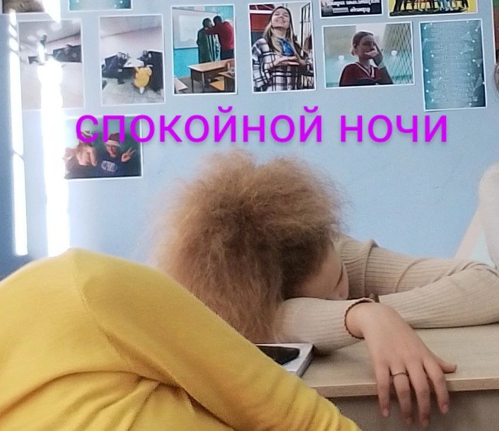

Я не буду определять кто на первом месте, а кто на втором, лучше расскажу про всех понемножку.
Вика Ушакова - молодая девушка с высотой 170 сантиметров и рыжеватыми волосами. Ее большая страсть - снимать видео, и она активно развивает свой Telegram-канал, где делится своими приключениями, радостью и знаниями.
Она посвящает много времени танцам и посещает занятия, чтобы не только поддерживать свою физическую форму, но и получать удовольствие от движения и музыки. Танцы помогают ей выразить свои эмоции и проявить свою творческую натуру.
Характер Вики Ушаковой можно описать как добрый и позитивный. Она всегда старается поддерживать положительное настроение и дарить улыбку окружающим.
Она легко находит общий язык с людьми и имеет способность привлекать к себе внимание. Благодаря своей привлекательности и харизме, она привлекает большое количество подписчиков на своем Telegram-канале и в социальных сетях.
Она также известна своим вайбом, то есть способностью эмоционально поддерживать и вносить атмосферу радости и веселья в любую компанию. Вика Ушакова - настоящая звезда, которая своим оптимизмом и дружелюбием делает мир ярче и счастливее.
Маша Рябец - молодая девушка с ростом 158 сантиметров и кудрявыми волосами. Она обладает не только привлекательной внешностью, но и прекрасным характером.
Во-первых, Маша очень добрая. Она всегда готова помочь другим людям и делает это с большой открытостью и искренностью. Многие обращаются к ней за советом или поддержкой в трудные моменты, ведь они знают, что она не откажет им в помощи.
Кроме того, Маша - дружелюбный человек. Она всегда стремится найти общий язык с людьми и создает уютную и радостную атмосферу в обществе. Она легко заводит новые знакомства и дружит с разными людьми. Ее открытость и приятный характер привлекают к ней людей, и она всегда старается быть хорошим другом для каждого.
Более того, с Машей комфортно общаться. Она всегда готова выслушать других, проявляет понимание и терпение. С ней легко найти общие интересы и темы для разговора, что делает общение с ней приятным и интересным.
Она ходит на танцы с грацией и элегантностью, умело воплощая каждое движение в ритме музыки. Ее тело плавно и гармонично двигается под музыкальные аккорды, она играет с пространством, переходя из одного танцевального шага в другой с непревзойденной легкостью. Она выражает эмоции и страсти через свои движения, погружаясь в музыкальную атмосферу. Ее танцы являются показателем ее страсти и преданности искусству, она исполняет свои роли с яркостью и харизмой, захватывая внимание зрителей.
Снежана Карпова - молодая женщина с ростом 167 см. У нее кудрявые волосы, которые придают ей очаровательный образ. Снежана - любительница танцев и с большим удовольствием посещает танцевальные занятия. Ей это действительно нравится, и она получает невероятное удовольствие от красивого движения тела под музыку.
Когда дело доходит до ее характера, Снежана является доброй и позитивной личностью. Она обладает великолепным чувством юмора и способна поднять настроение даже самому печальному человеку.
Ее смех звучит очаровательно и заразителен, так что все, кто ее слышат, не могут удержаться от смеха.
Снежана умеет находить радость даже в самых маленьких вещах.
Она позитивно настроена и не поддаётся негативным эмоциям.
Она искренне верит в лучшее и всегда старается поддержать окружающих и помочь им.
Ее доброта и позитивное отношение создают вокруг нее атмосферу тепла и радости.
В целом, Снежана - это прекрасная личность, обладающая хорошим характером. Ее юмор, доброта и позитивное мышление делают ее привлекательной для других людей. Она поднимает настроение всем вокруг себя и является настоящим источником радости и вдохновения.